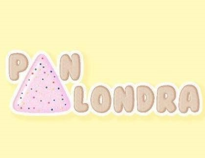

Nuestra panadería está ubicada en...
Facebook y redes de contacto 
AQUÍ ECONTRARÁ DETALLES DE NUESTRA PÁGINA Y PRODUCTOS
1. Introducción
2. Objetivo
3. Desarrollo
4. Conclusiones
5. Bibliografía
6. Productos
Desde 1984 estamos ofreciendo el mejor servicio respecto a panadería, con una amplia selección de panes en tienda y a pedidos, por eso para expandirnos y alcanzar a aquel público hemos decidido hacer esta página web y con ustedes nuestro equipo... como portavoz y nombre de la panadería ALONDRA MAGNA como la repartidora y panadera por excelencia y su hermana la gran panadera... LUCERO DUARTE y por último y no menos importante, LA BELLA, LA PRECIOSA Y PARTE MÁS IMPORTANTE TRIANAAA DEEEESHIREEEE